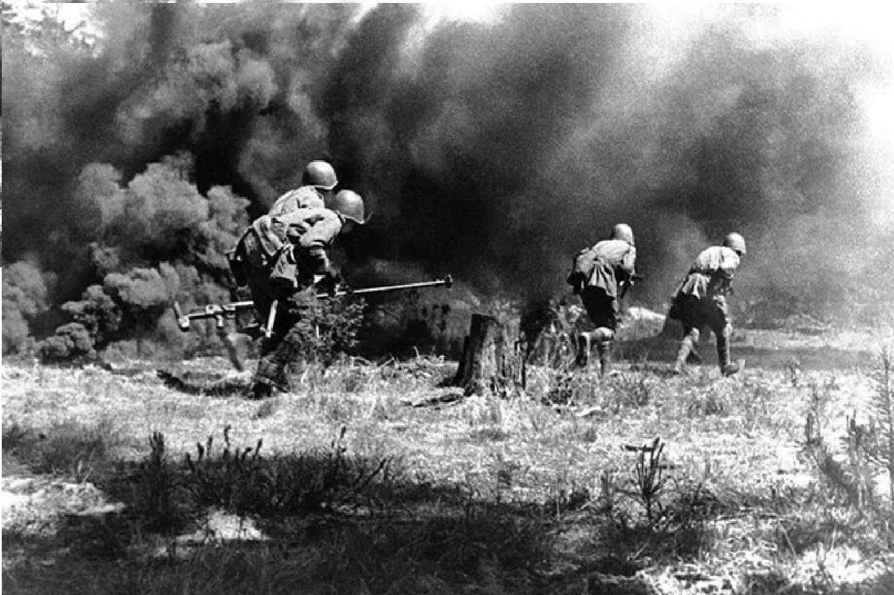
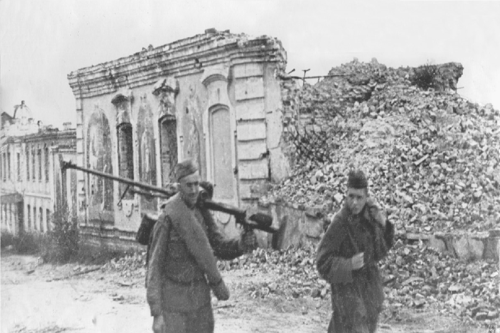

1943
 |
ПредисторияСмоленск имел стратегическое значение, так как контроль над этим городом обеспечивал доступ к центральным регионам Советского Союза. В июле 1941 года немецкие войска захватили Смоленск, что обострило ситуацию на советском фронте. В 1943 году, после успешного завершения Сталинградской битвы и битвы на Курской дуге, советское командование решило взять Смоленск обратно, чтобы продолжать наступательную операцию. |
|
Операция началась 22 июля 1943 года. Советские войска, состоящие из 3-го Белорусского фронта под командованием генерала Баграмяна, атаковали немецкие позиции. Важным моментом был мощный артиллерийский обстрел и поддержка авиации, что позволило советским войскам добиться значительных успехов. ПодробнееСражения шли на нескольких ключевых направлениях: в районе Смоленска, Орши и Витебска. Основным противником советских войск были войска группы армии "Центр", которые пытались удержать свои позиции. |
 |
|  |
Результаты Смоленская операция завершилась 29 августа 1943 года. Советские войска смогли освободить Смоленск и значительные территории в его окрестностях. Это событие стало важной вехой в освобождении Западной России от немецкой оккупации и способствовало повышению морального духа советских войск. ИтогиСмоленская операция положила начало серии освобождений советских территорий и способствовала окончательному разгрома немецких войск в советском тылу. |